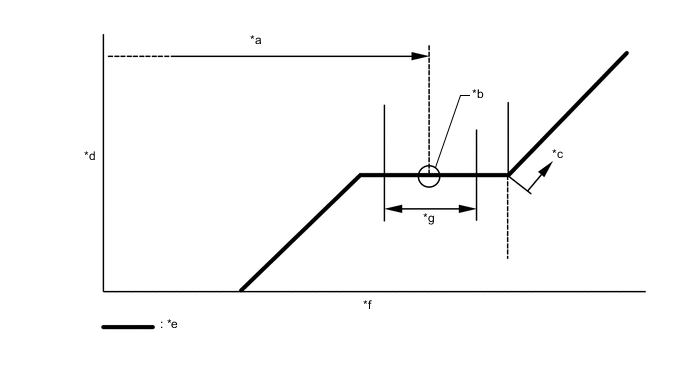
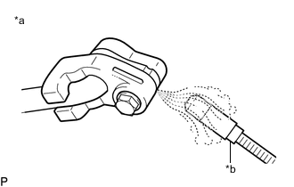
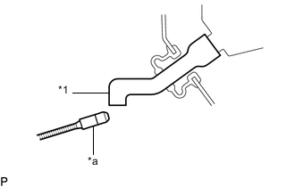

PROCEDURE
RECOVER REFRIGERANT FROM REFRIGERATION SYSTEM
Operate the compressor under the following conditions:
| Item | Condition |
|---|---|
| Drive mode | EV mode |
| Power switch | On (READY) |
| Operating time | 5 minutes or more |
| A/C switch | On |
| Blower speed | High |
| Temperature setting | Max hot |
Tech Tips
Operating the compressor under the above conditions allows the refrigerant to be recovered more easily.
It is not necessary to operate the compressor if the A/C does not operate because of compressor lock, etc.
Turn the power switch off.
Wait for 3 minutes to allow the electric expansion valve to return to its original position.
Recover the refrigerant from the A/C system using a refrigerant recovery unit.
Tech Tips
Use the refrigerant recovery unit in accordance with the manufacturer's instruction manual.
After the refrigerant recovery unit stops operating, leave the vehicle for 1 hour and check that the refrigerant pressure has not increased above 150 kPa (1.5 kgf/cm2, 22 psi).
CAUTION:
If an air conditioning system line is disconnected when the pressure has increased, refrigerant may spray out and cause an injury. Therefore, make sure to recover the refrigerant until the pressure does not increase.
Note
If the pressure increased, operate the refrigerant recovery unit again to recover the refrigerant until the pressure does not increase.
CHARGE AIR CONDITIONING SYSTEM WITH REFRIGERANT
Tech Tips
Charge refrigerant in accordance with the equipment manual.
Perform vacuum purging using a vacuum pump or appropriate equipment.
Note
Be sure to use a refrigerant recovery unit that is compatible with HFO-1234yf (R1234yf) systems.
Charge the air conditioning system with refrigerant.
| Refrigerant Type |
|---|
| HFO-1234yf (R1234yf) |

| *a | Standard Charge Amount | *b | Mean Value in Proper Range |
| *c | Overcharged | *d | High Pressure |
| *e | Sub-cool System | *f | Refrigerant Amount |
| *g | +/-30 g (+/-1.05 oz) | - | - |
| Standard Charge Amount |
|---|
| 1030 to 1090 g (36.4 to 38.4 oz) |
Note
Do not turn the A/C switch on before charging the air conditioning system with refrigerant. Doing so may cause the compressor to operate without refrigerant, resulting in overheating of the compressor.
The refrigerant amount should be checked by quantity (weight).
The graph above is shown for reference only.
If the air conditioning system cannot be charged with the specified amount of refrigerant, perform the following procedure:
Charge the air conditioning system with refrigerant until it cannot be added.
Enter Refrigerant Filling Mode.
Charge the air conditioning system with refrigerant until it reaches the specified amount.
After adding refrigerant, immediately turn the power switch off to exit Refrigerant Filling Mode.
Perform Middle Differential Pressure Valve State Check.
WARM UP COMPRESSOR
Turn the power switch on.
Turn the A/C switch on, set the temperature to MAX COOL and wait for at least 2 minutes to warm up the compressor.
Note
To prevent damage to the compressor, be sure to warm up the compressor when turning the air conditioning on after removing and installing any air conditioning system lines (including the compressor).
INSPECT FOR REFRIGERANT LEAK
After recharging the air conditioning system with refrigerant, inspect for refrigerant leaks using a halogen leak detector.
Tech Tips
Be sure to use a halogen leak detector that is compatible with HFO-1234yf (R1234yf) systems.
Carry out the test under the following conditions:
Turn the power switch off.
Ensure good ventilation (the halogen leak detector may react to volatile gases which are not refrigerant, such as gasoline vapor and exhaust gas).
Repeat the inspection 2 or 3 times.
Measure the pressure to make sure that there is some refrigerant remaining in the air conditioning system.
Pressure when the compressor is off: approximately 392 to 588 kPa (3.9 to 5.9 kgf/cm2, 57 to 85 psi)

| *a | Inspect for leak |
| *b | Halogen Leak Detector |
Using a halogen leak detector, inspect for refrigerant leaks from the air conditioning system.

| *1 | Drain Cooler Hose |
| *a | Halogen Leak Detector |
Bring the halogen leak detector close to the drain cooler hose with the detector power off, and then turn the detector on.
Tech Tips
After the blower motor has stopped, leave the cooling unit for more than 15 minutes.
Bring the halogen leak detector sensor under the drain cooler hose.
When bringing the halogen leak detector close to the drain cooler hose, make sure that the halogen leak detector does not react to volatile gases. If it is not possible to avoid interference from volatile gases, the vehicle should be lifted up to allow checking for leaks.
If a refrigerant leak is not detected from the drain cooler hose, remove the blower motor control from the cooling unit. Insert the halogen leak detector sensor into the unit and check for leaks.
Disconnect the pressure sensor connector and leave it for approximately 20 minutes. Bring the halogen leak detector close to the pressure sensor and check for leaks.
Tech Tips
When checking for leaks, the presence of oily dirt at a joint can indicate a leak.